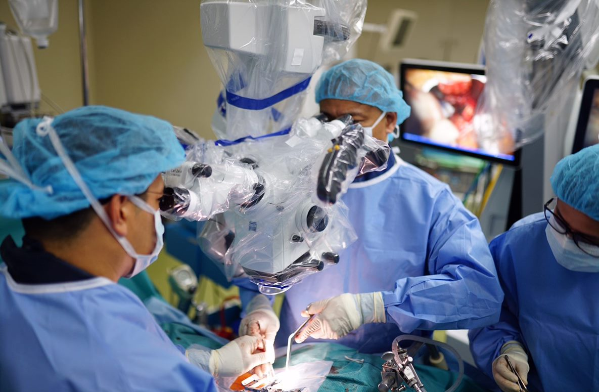
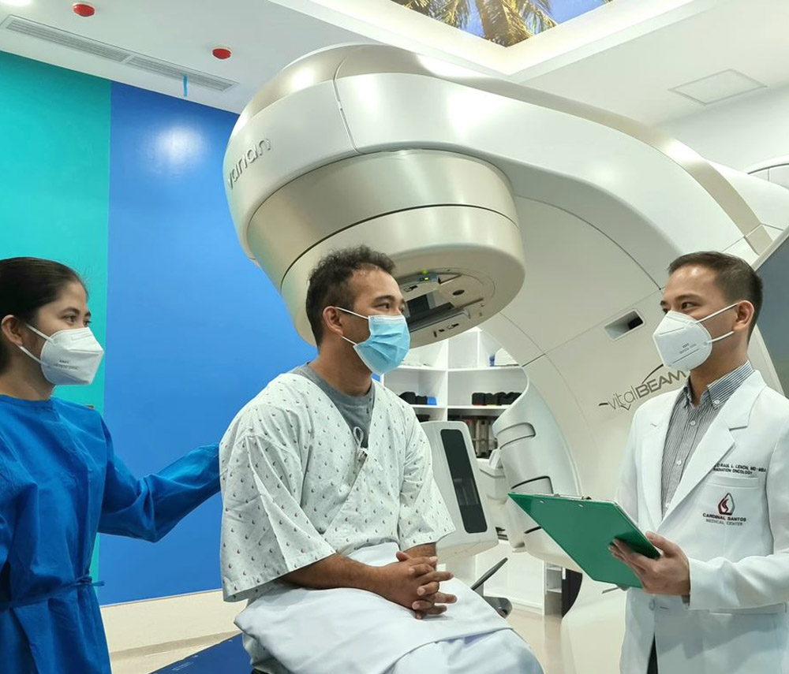
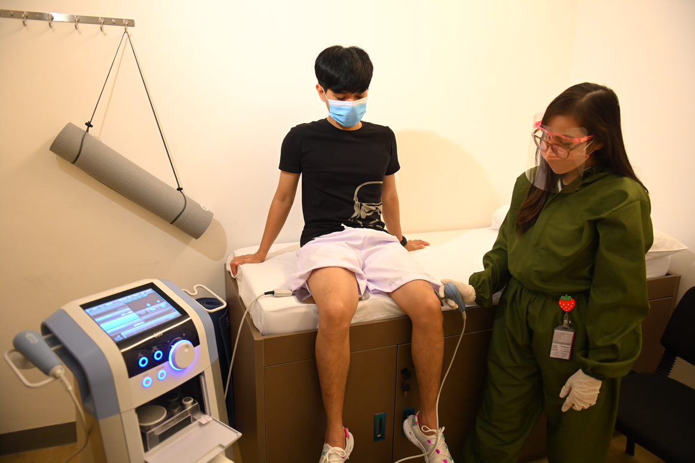
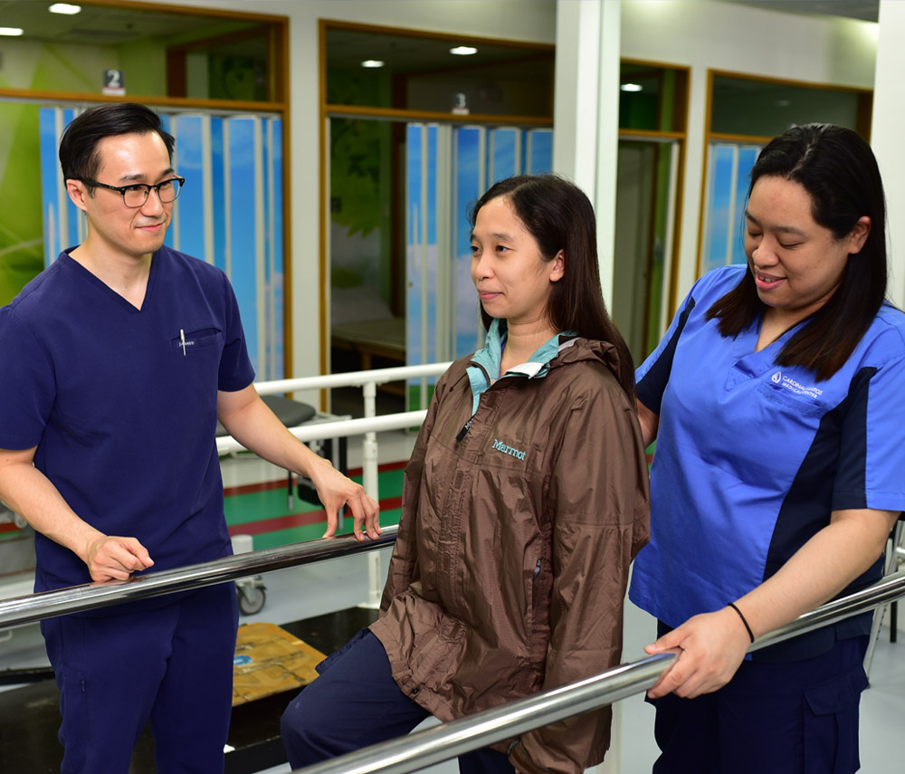
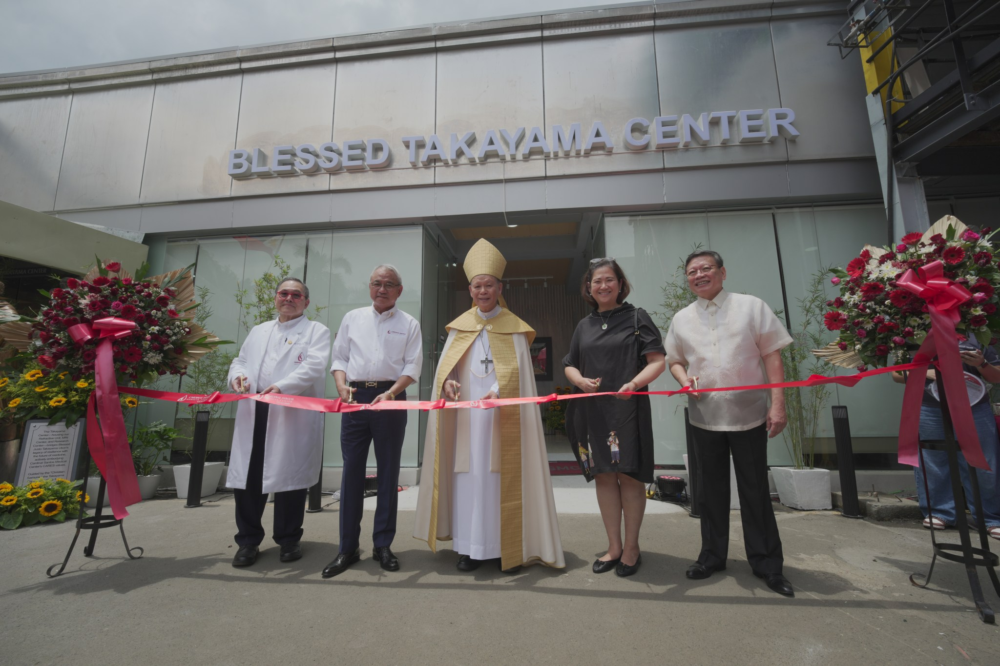
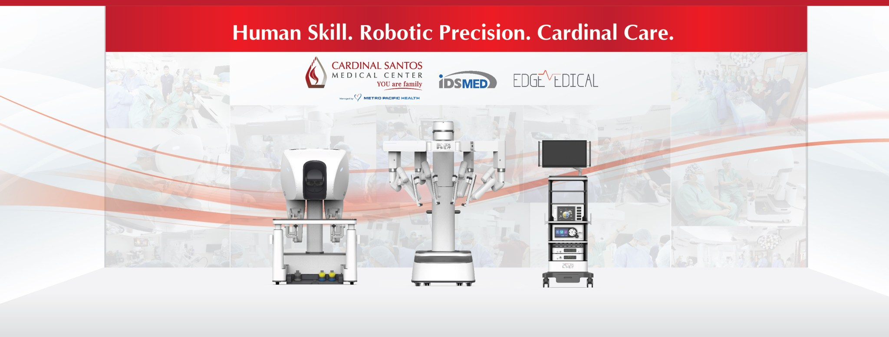

Cardiovascular Institute
Center of Excellence for heart care — diagnostics, intervention, and coordinated cardiac pathways.
Greenhills West · San Juan City
Caring for YOU like family — a leading hospital for Cardiology, Oncology, Neurosurgery, Gastroenterology, and Rehabilitation Medicine.
Flagship institutes patients and families look for when they need specialized care in Metro Manila.
Center of Excellence for heart care — diagnostics, intervention, and coordinated cardiac pathways.
Neurosurgery and spine expertise with imaging and multidisciplinary support under one roof.
Oncology care designed around patients and families — consults, treatment planning, and follow-up.
Prof. Sol Z. Alvarez Center for Digestive Diseases & Gastrointestinal Endoscopy.
Injury assessment, therapy, and return-to-activity programs for athletes and active adults.
Physiatry-led rehab for recovery after illness, surgery, or neurological events.
Sample package categories from CSMC — confirm current inclusions and rates with Admissions or Marketing.
Heart
Cardiac packages
Ortho
Orthopedic packages
Neuro
Neurosurgery packages
GI
Endoscopy packages
Wellness
Executive check-up
Maternity
Maternity packages
Surgery
Robotic surgery
Allied
Medical allied services
Institutes and campus moments from Cardinal Santos Medical Center.





Despite being destroyed by heavy artillery after World War II, Cardinal Santos Medical Center — formerly St. Paul’s Hospital of Manila — now stands as one of the country’s leading hospitals specializing in Cardiology, Oncology, Neurosurgery, Gastroenterology, and Rehabilitation Medicine.
CSMC is also known for Pediatrics, Obstetrics and Gynecology, Pulmonary Medicine, Nephrology, Urology, and Minimally Invasive Surgery — serving families from Greenhills and across Metro Manila.

10 Wilson St., Greenhills West, San Juan City
Your health is our top priority — reach Admissions, Marketing, or the trunkline for directions and appointments.
Trunkline (02) 8727-0001
Email marketing@csmc.ph Alt: productinfo@csmc.ph
Address
10 Wilson St., Greenhills West
San Juan City, Metro Manila 1502
Facebook facebook.com/CardinalSantos
Website cardinalsantos.com.ph
Caring for YOU like family
This quotation sample shows how CSMC can present institutes, packages, and contact paths clearly on desktop and mobile — alongside a browsable appointments admin demo.
Message on Facebook